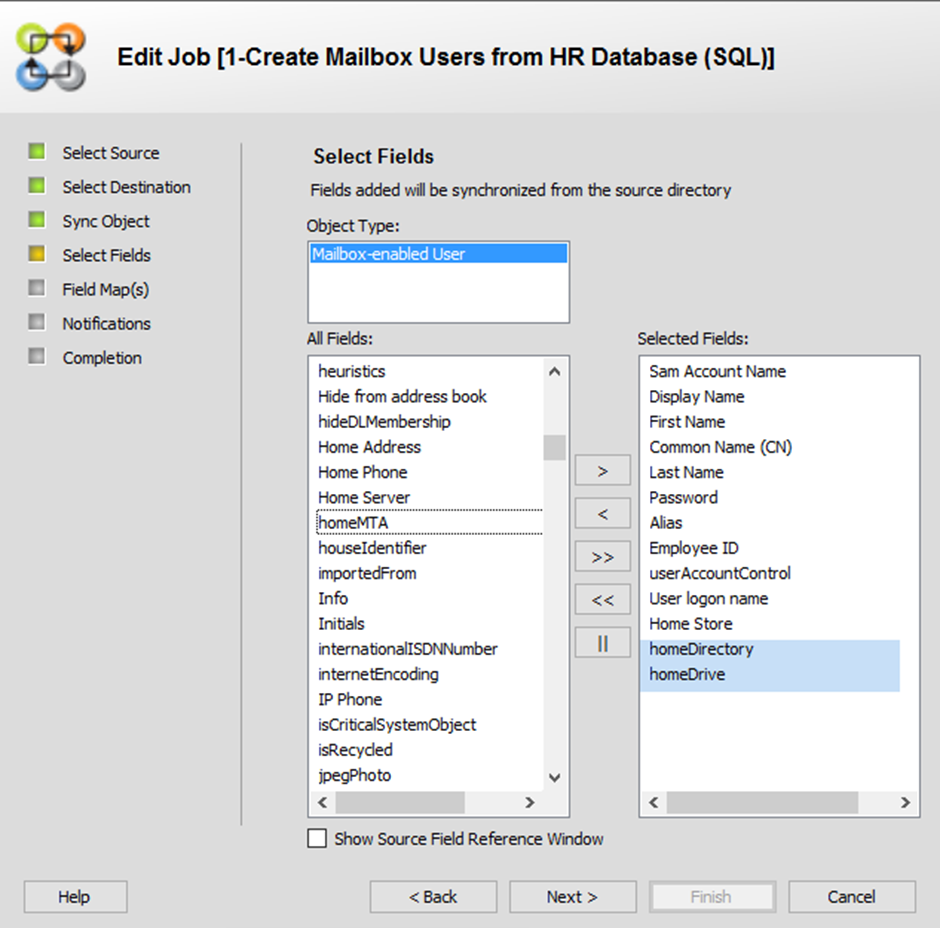

Applies To:
GroupID 10.x - Synchronize
Business Scenario:
When a user is created in Active Directory, we assign them a home folder by populating
their homeDirectory attribute:\\<MachineName>\<FolderName>\%username%
This creates a home folder for the user named after their samAccountName.
Now
that we are using GroupID Synchronize to automatically provision users in Active
Directory, how can we automatically assign home folders to them?
More Information:
A home folder is a private network location where users can store personal files. It is stored in a shared folder on a network server. Users can access their home folders from any computer on the network.
Steps:
Follow the steps below to automatically assign a home folder to a user at the time of creation. You can either create a new Synchronize job or modify an existing one.
- In GroupID Management Console, select Synchronize > All Jobs. Either create a new job or double-click an existing job to edit it.
- Go through the pages of the wizard until you reach the Select Fields page.
- Move the homeDirectory and homeDrive fields to the Selected Fields box and click Next.
